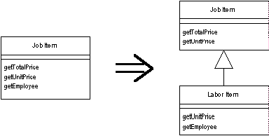

Extract Subclass
A class has features that are used only in some instances.
Create a subclass for that subset of features.

For more information see page
330
of
Refactoring
| Refactoring Home |
| Alphabetical List |